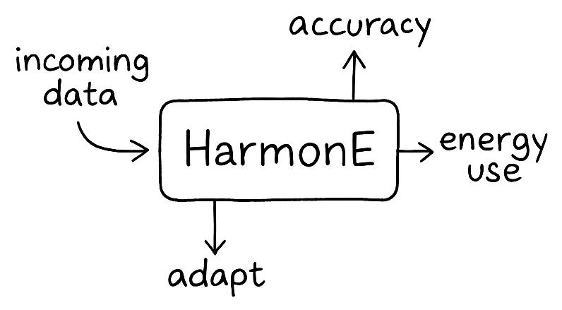
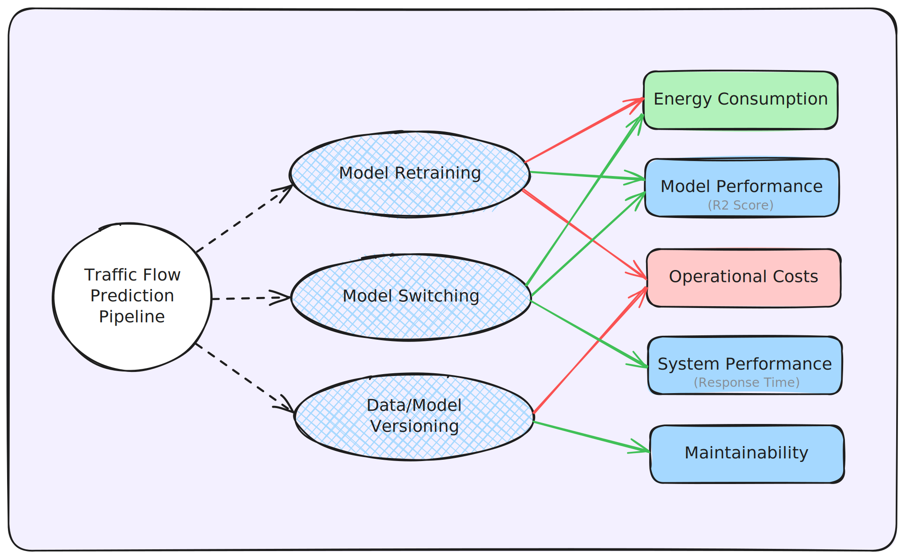
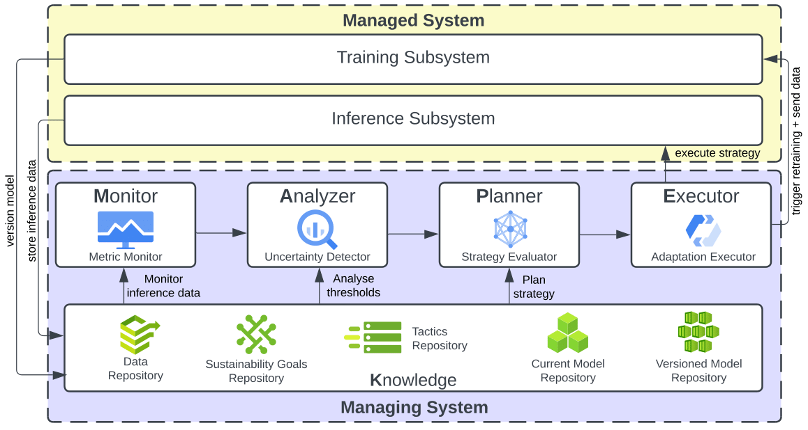

Abstract

Machine learning powers much of what we use every day, but keeping the models that these systems use reliable and energy-efficient over time isn’t easy. Models drift, data changes, and retraining too often can drain resources. Retraining models too often wastes energy and resources, while doing too little can hurt performance.
HarmonE is our solution: an architectural approach that helps machine learning pipelines adapt on their own. It monitors accuracy, energy use, and data shifts to keep things running smoothly. It only takes action when needed, based on sustainability goals set in advance.
We tested HarmonE on a city’s traffic system using a digital twin. It adapted to new conditions while saving energy and maintaining performance. After all, sustainability isn’t just about quick fixes; it’s about building systems that can maintain their performance over time, even as conditions evolve.
Motivation
Today’s MLOps pipelines often focus on performance but overlook long-term sustainability. Frequent retraining maintains accuracy but is resource-intensive.
HarmonE adds awareness and adaptability. It helps models stay efficient and accurate without wasting energy or compute.
Background & Prior Work
HarmonE unifies insights from four earlier studies that each tackled sustainability from a different angle.
| Prior Work | Key Idea | Link |
|---|---|---|
| Poster: Toward Sustainable MLOps (arXiv :2404.04572) |
Early sketch of combining runtime monitoring with energy‑accuracy trade‑offs. | Read Poster |
| EcoMLS (arXiv :2404.11411) |
Design‑time energy & accuracy budgets that trigger condition‑based adaptation. | Read EcoMLS |
| SWITCH (arXiv :2402.06351) |
Lightweight runtime switching among pre‑trained models for rapid response. | Read SWITCH |
| Digital Twin for ITS (arXiv :2502.17646) |
City‑scale Digital Twin that provides traceable metrics for adaptive evaluation. | Read DT Paper |
These works shaped HarmonE’s Decision Map, adaptive tactics, and evaluation testbed.
What is HarmonE?
HarmonE is a self-adaptive MLOps architecture built around the MAPE-K loop:
- Monitor: Tracks accuracy, energy use, and data changes.
- Analyze: Detects when things drift from expected behavior.
- Plan: Determines the best course of action.
- Execute: Applies the adaptation.
- Knowledge: Stores history and goals to guide decisions.
You define sustainability goals like energy limits or minimum accuracy, and HarmonE helps the system meet them.
Key Components
HarmonE is composed of three main parts:
- Decision Map: Sets design-time sustainability goals and constraints.

- Managed System: The ML pipeline for training and inference.
- Managing System: The MAPE-K loop that drives adaptation.

Evaluation: Traffic Prediction Case Study
We tested HarmonE on a digital twin of a city traffic system using the PeMS dataset. Compared with traditional setups, HarmonE:
- Used 54.5% less energy than retraining-based approaches.
- Achieved 95% of the best model’s accuracy.
- Reduced inference time by over 50%.
| Approach | Energy (mJ) | R² Score | Inference Time (ms) | # Adaptations |
|---|---|---|---|---|
| LR | 12.12 | 0.7597 | 0.83 | - |
| LR + PRT | 12.70 | 0.7624 | 0.83 | 4 |
| SVM | 14.76 | 0.7897 | 1.11 | - |
| SVM + PRT | 16.33 | 0.8167 | 1.11 | 4 |
| LSTM | 32.91 | 0.9005 | 3.85 | - |
| LSTM + PRT | 45.35 | 0.9085 | 3.85 | 4 |
| Switch | 24.32 | 0.8445 | 2.27 | 13 |
| Switch + PRT | 25.32 | 0.8435 | 2.27 | 17 |
| HarmonE | 20.62 | 0.8628 | 1.89 | 12 |
Why HarmonE Matters
HarmonE proves that machine learning systems can be both effective and sustainable. Instead of retraining on a fixed schedule, it adapts only when needed. This reduces energy use, preserves performance, and supports long-term reliability.
Citation
@misc{bhatt2025harmoneselfadaptiveapproacharchitecting,
title={HarmonE: A Self-Adaptive Approach to Architecting Sustainable MLOps},
author={Hiya Bhatt and Shaunak Biswas and Srinivasan Rakhunathan and Karthik Vaidhyanathan},
year={2025},
eprint={2505.13693},
archivePrefix={arXiv},
primaryClass={cs.SE},
url={https://arxiv.org/abs/2505.13693},
}